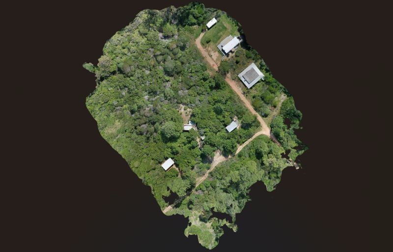
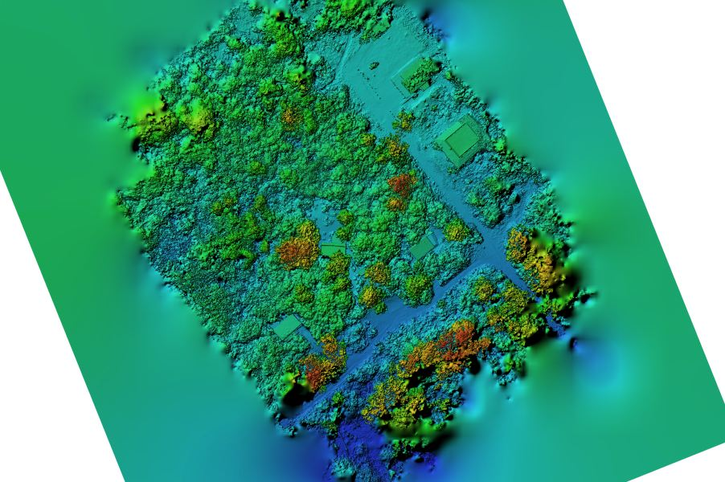
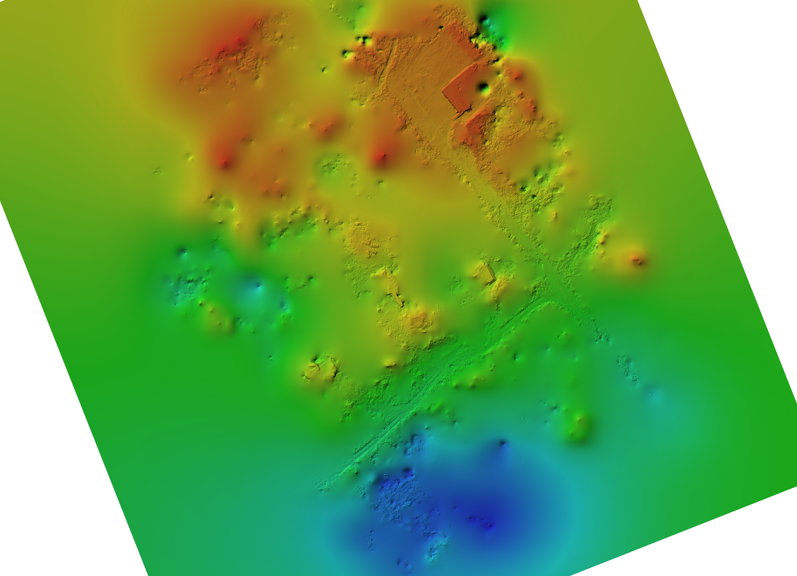
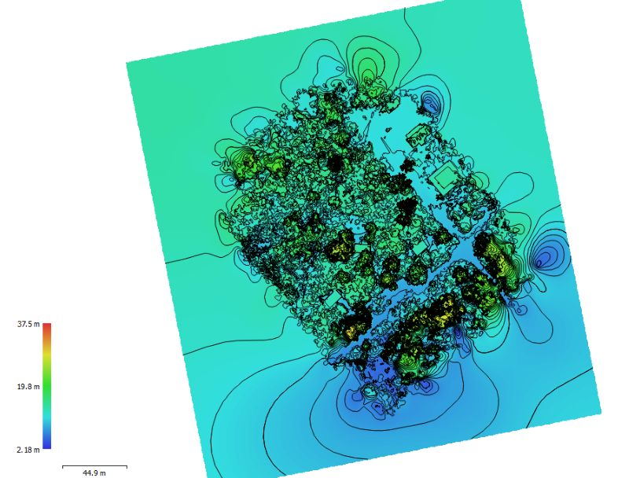

Ortofotos
Una representación cenital obtenida a partir de las fotografías aéreas, para consultar y documentar el área de trabajo.
TERRENO · INFRAESTRUCTURAS · MODELOS 3D
Ortofotos, nubes de puntos y modelos 3D de terrenos e infraestructuras.
Capturamos imágenes aéreas y las procesamos mediante fotogrametría para representar la geometría de terrenos e infraestructuras. Antes del vuelo definimos el nivel de detalle, las referencias y los formatos de entrega según el uso de los datos.

QUÉ PODEMOS OBTENER
Una representación cenital obtenida a partir de las fotografías aéreas, para consultar y documentar el área de trabajo.
Un conjunto de puntos tridimensionales para representar la geometría del terreno, las construcciones y los elementos capturados.
Reconstrucciones tridimensionales de terrenos e infraestructuras para visualizar el espacio capturado y consultar su geometría.
DE LA CAPTURA AL RESULTADO
Ortofoto, relieve, elevaciones y curvas: ejemplos de la información que podemos obtener mediante fotogrametría.
Una vista cenital del área capturada para consultar el conjunto.

Ampliar imagen ↗El relieve y los elementos de la superficie, representados en detalle.

Ampliar imagen ↗Una representación por colores para visualizar las diferencias de altura.

Ampliar imagen ↗Curvas superpuestas sobre una representación de elevaciones.
RESULTADOS PARA TU EQUIPO
El alcance, los formatos y las condiciones se acuerdan para cada proyecto.
Hablemos de lo que necesitasCÓMO TRABAJAMOS
Definimos el área de trabajo, los productos de fotogrametría y los requisitos de referencia y detalle que necesita tu proyecto.
Estudiamos el entorno, el equipo y las condiciones de la operación.
Realizamos el trabajo de campo según el alcance acordado.
Procesamos las imágenes y preparamos las ortofotos, nubes de puntos o modelos acordados en los formatos definidos para tu equipo.
HABLEMOS DE TU PROYECTO
Cuéntanos qué necesitas inspeccionar o digitalizar.
Te ayudamos a definir la captura y los resultados.